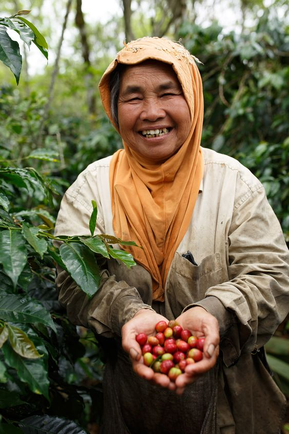
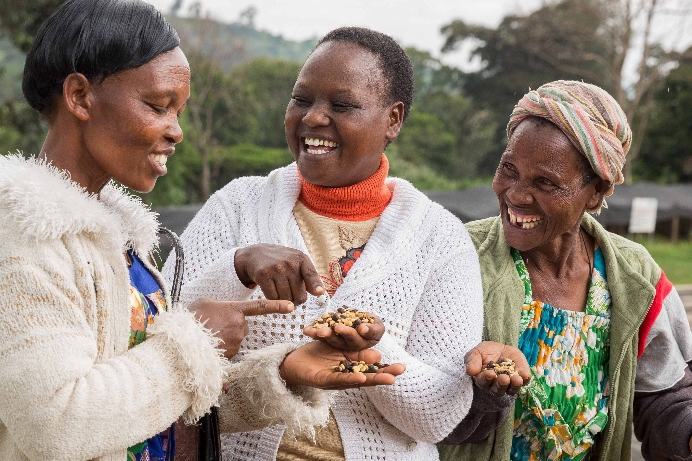

"우리의 사명은 가능한 최고의 커피를 공급하고, 로스팅 및 제공하는 한편, 모든 이해관계자들의 세상을 조금 더 좋게 만드는 것입니다."
-Jason Scherr, 설립자
“OUR MISSION IS TO SOURCE, ROAST AND SERVE THE BEST COFFEE POSSIBLE AND, ALONG THE WAY, MAKE THE WORLD A LITTLE BETTER FOR ALL OF OUR STAKEHOLDERS.”
띵크커피는 대규모 타 프랜차이즈와는 달리 제 3세계 농민을 착취하지 않고 정당한 이윤을 분배하여 생산된 곳의 원두만을 사용합니다.
what is fair trade?



커피농가를 생각하는
올바른 공정무역
띵크커피는 투명한 거래를 위해 커피농장에 정당한 이윤 분배로 원두를 조달하고 있습니다.
또한 커피 농가를 직접 컨택해 거래를 하고 있으며, 농가가 위치한 지역과 커뮤니케이션에 집중해 다양한 프로젝트를 진행하고 있습니다.
생각하는 커피
환경을 생각하는 커피
커피농가를 생각하는 커피
이웃을 생각하는 커피
당신을 생각하는 커피
커피농가를 생각하는 커피
이웃을 생각하는 커피
당신을 생각하는 커피